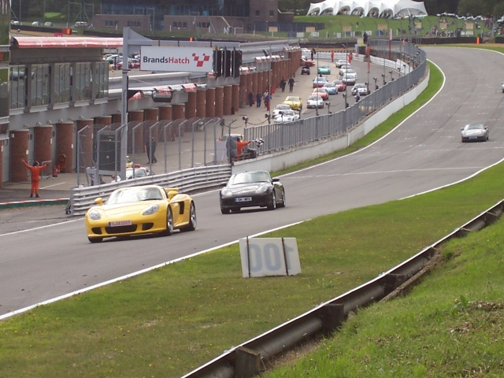
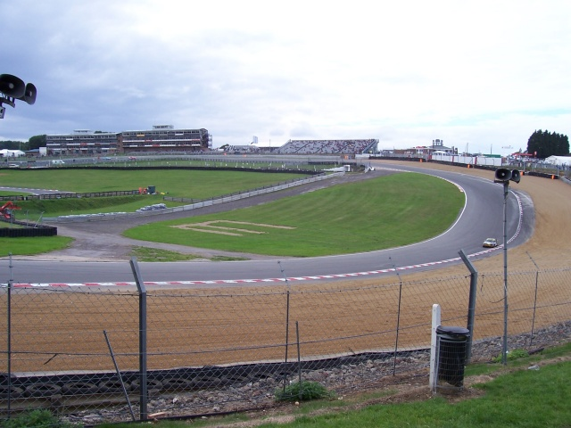
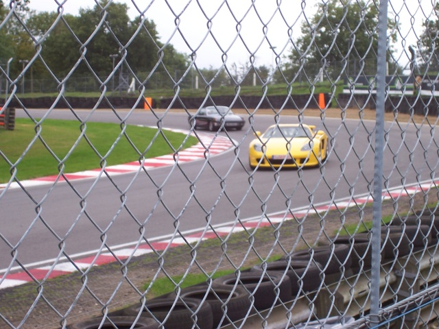
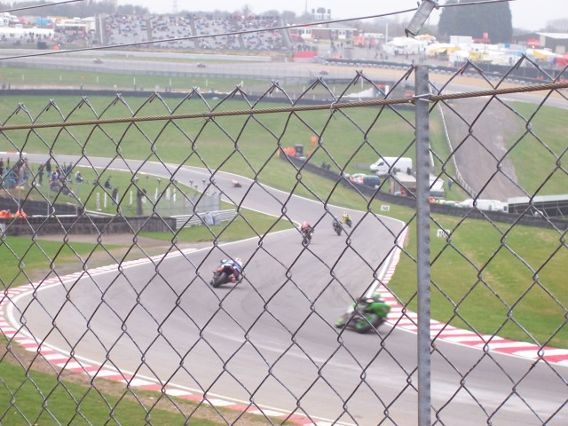
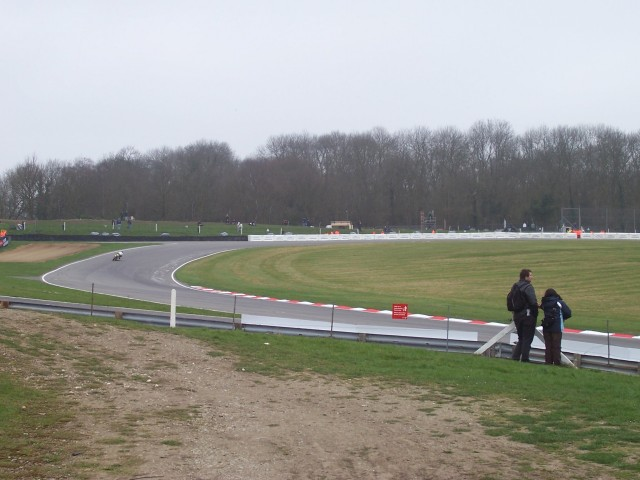

Numbers and arrows on the map indicate the location and direction in which the photographs were taken.
Brands Hatch - Start/Finish to Surtees
|| Contents | Start to Surtees | Surtees to Clark || Home ||
Numbers and arrows on the map indicate the location and direction in which the
photographs were taken.
Return to racingcircuits.net's Photo Archive Main Index

1 - Brabham Straight from opposite pit exit

2 - Pilgrims Rise & Paddock Hill Bend

3 - Druids Hairpin

4 - Druids

5 - Druids to Graham Hill Bend

6 - Surtees to Clearways
Photos ©Andy Sharpe. Reproduced here with kind permission